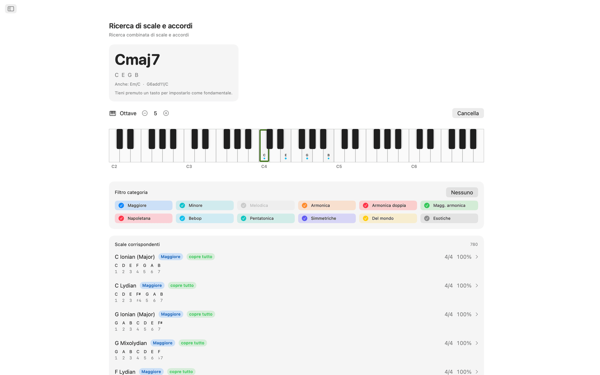
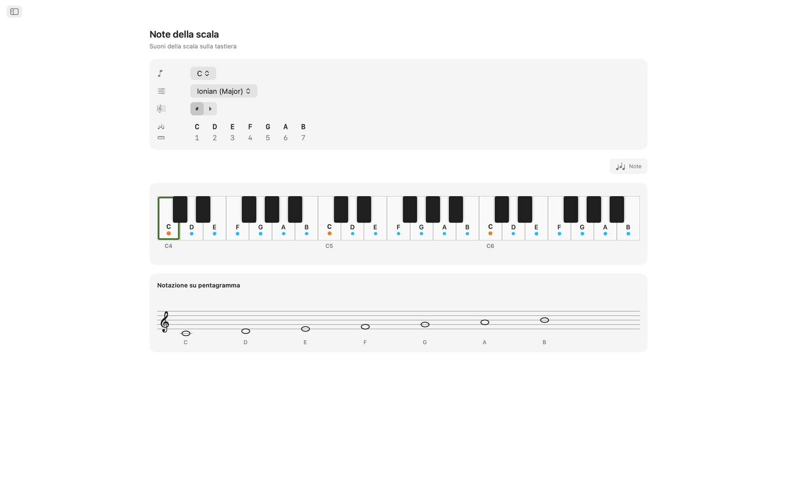
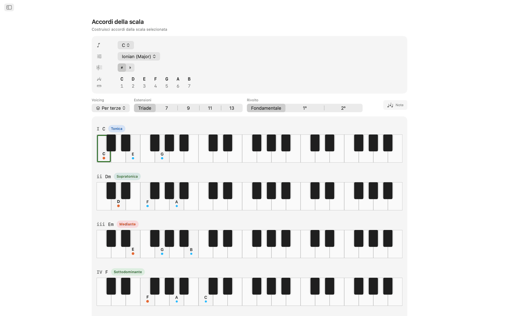
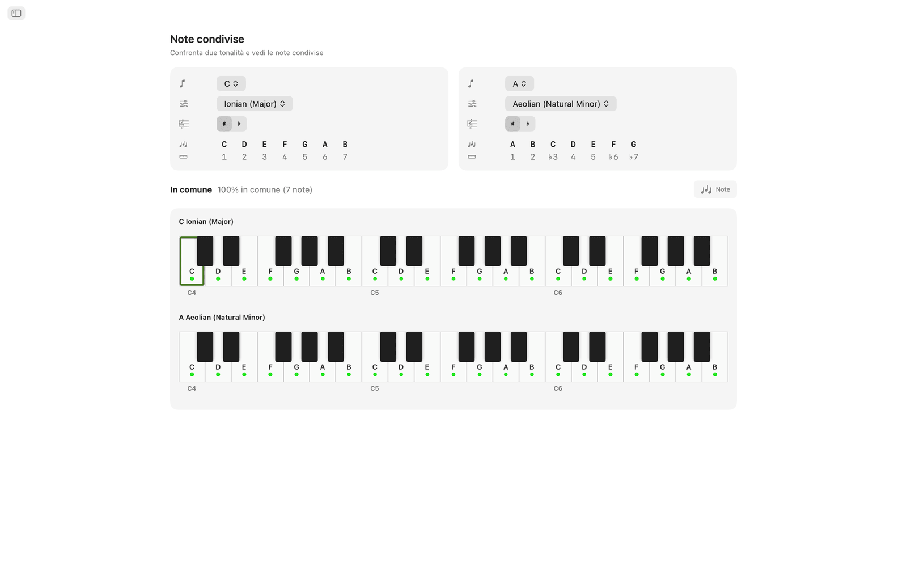
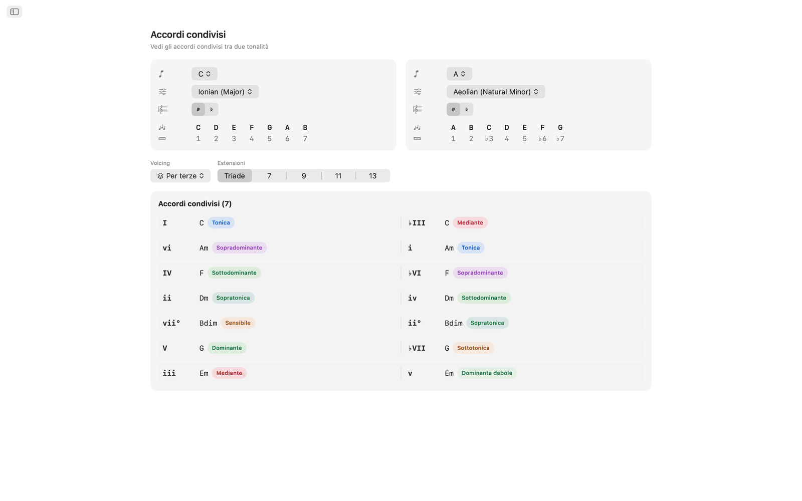
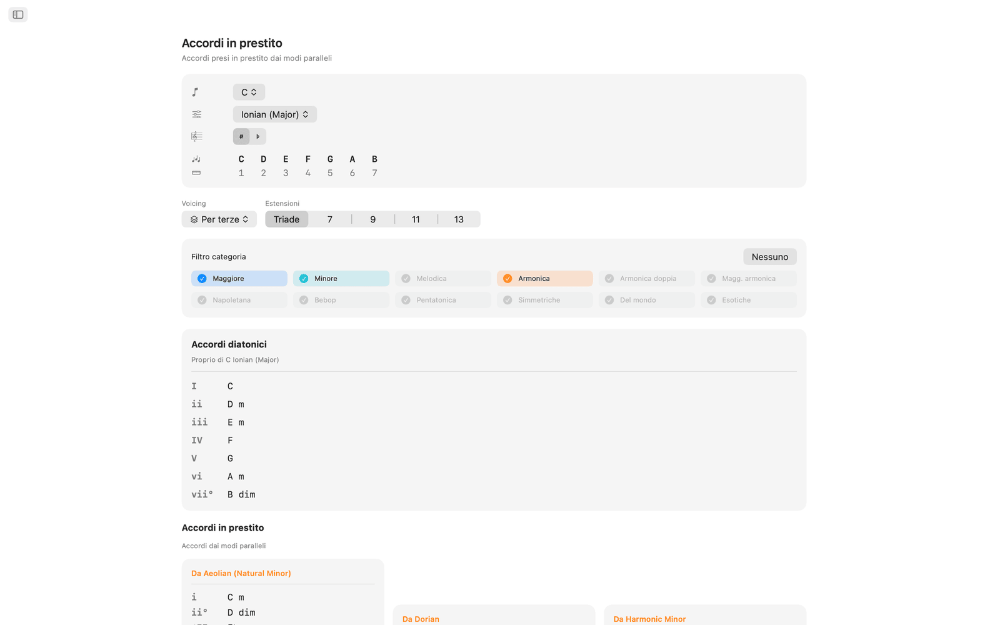
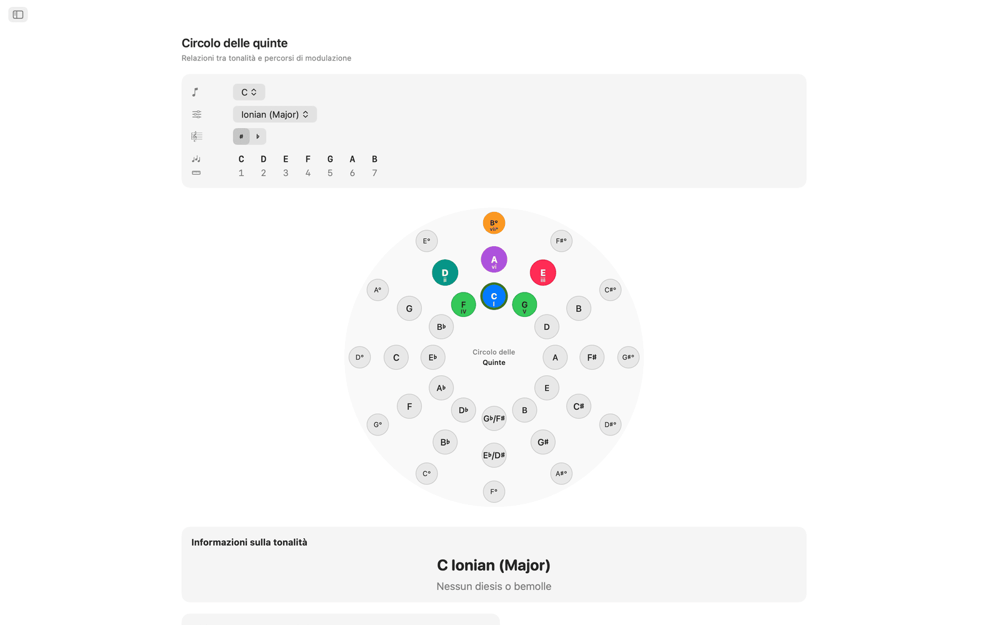
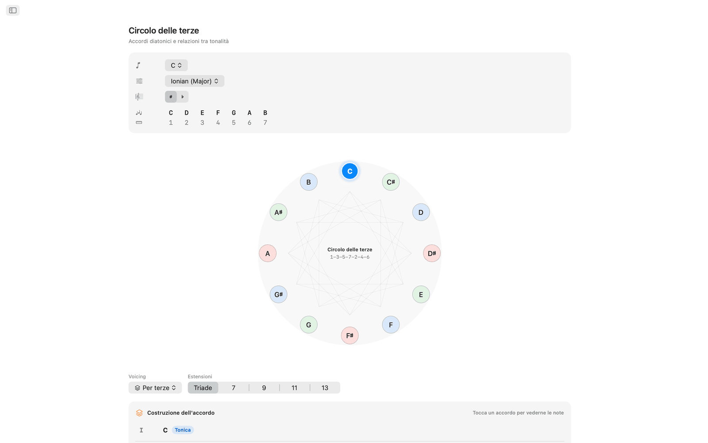
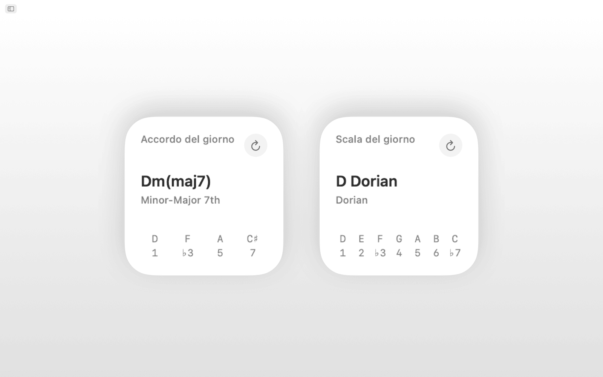
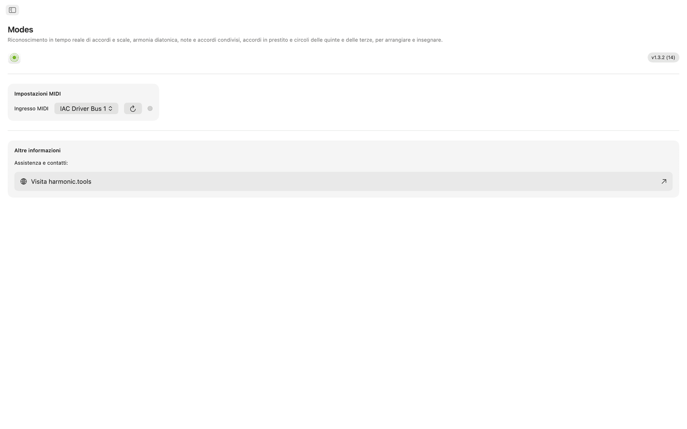

Modes per macOS
Modes è un'app di teoria musicale per macOS che copre scale, accordi, voicing e percorsi di modulazione, con la barra laterale e da tenere accanto alla tua DAW. Supporta Siri, Comandi Rapidi, la ricerca Spotlight e i widget del Centro Notifiche.
- Ricerca di scale e accordi con MIDI + tastiera su schermo
- 65 scale · 21 tipi di accordo · 8 famiglie di voicing
- Note condivise, accordi condivisi, accordi in prestito
- Circolo delle quinte + circolo delle terze interattivi
- Siri, Comandi Rapidi, Spotlight e widget del Centro Notifiche
Screenshot
Gli screenshot in versione chiara e scura seguono il tema del sito.












Funzioni
- Suona le note sulla tastiera interattiva multi-ottava o collega un controller MIDI e Modes riconosce in tempo reale l'accordo che suoni: maggiore, minore, diminuito, aumentato, con estensioni, sospeso e altro. Ordina ogni scala compatibile in base alle note che coincidono, e puoi filtrare i risultati per categoria di scala (diatonica, minore melodica, minore armonica, pentatonica, bebop, simmetrica, etnica e altre).
- Le 65 scale e modi comprendono i sette modi diatonici, la minore melodica, la minore armonica, l'armonica doppia, la napoletana, la bebop, le pentatoniche, il blues, l'esatonale, la diminuita, l'aumentata e scale del mondo come Hirajōshi, Kumoi, In Sen, persiana ed enigmatica. Ogni scala è scritta con i suoi intervalli ed evidenziata sulla tastiera.
- Scegli una fondamentale e una scala qualsiasi per vedere ogni nota della tonalità evidenziata su due ottave, così vedi quali note appartengono alla scala e dove sta la fondamentale.
- Modes genera triadi o accordi di settima diatonici per ogni grado della scala scelta, con numeri romani, nomi degli accordi, etichette di funzione armonica (tonica, sottodominante, dominante e oltre 30 altre etichette dettagliate) e tastiere con il voicing, tutto allineato per un confronto immediato.
- Gli accordi si possono costruire con voicing per terze, sus2, sus4, di sesta, add, per quarte, per quinte e power, dalle triadi fino alle tredicesime, con ogni estensione indicata in automatico.
- Note condivise e Accordi condivisi confrontano due tonalità affiancate: quali note coincidono, quali sono esclusive e quali accordi hanno in comune. Aiuta a pianificare una modulazione o a riarmonizzare.
- La vista Accordi in prestito elenca gli accordi diatonici propri della tua tonalità insieme a ogni accordo in prestito dai modi paralleli, raggruppati per modo di provenienza.
- Il circolo delle quinte è un circolo interattivo a doppio anello (maggiori fuori, minori naturali dentro). Fai clic su un settore per cambiare tonalità. Vedi dominante, sottodominante, relativa, parallela e tonalità vicine, con indicatori della difficoltà di modulazione e armatura di chiave.
- Il circolo delle terze mostra i rapporti di mediante cromatica su un diagramma a ciclo diminuito. I pulsanti maggiore e minore per ogni altezza rivelano i legami di mediante, relativa e parallela, utili per la modulazione cinematografica e neoriemanniana.
- Collega qualsiasi tastiera o controller MIDI class compliant. Le note suonate si uniscono ai clic sullo schermo per il riconoscimento.
- Chiedi a Siri o esegui un comando rapido per mostrare le note di una scala, elencare gli accordi di una tonalità, riconoscere una scala o un accordo, scrivere le note di un accordo, trovare l'intervallo tra due note, trasporre una nota o aprire il circolo delle quinte e gli accordi in prestito. Scale e accordi sono indicizzati anche in Spotlight.
- I widget Scala del giorno e Accordo del giorno si possono aggiungere al Centro Notifiche.
Sul desktop
- Funziona del tutto offline. Nessun account, nessuna pubblicità, nessun tracciamento
- App nativa per macOS con navigazione nella barra laterale
- Interfaccia che segue l'aspetto scuro o chiaro del sistema
- Grafia enarmonica: automatica, diesis o bemolli
- Finestra ridimensionabile. Tienila aperta accanto alla tua DAW
Accessibilità
Funziona con VoiceOver e Controllo vocale e si usa da tastiera, con i tasti freccia e la barra spaziatrice.
Modes è gratis per 7 giorni. Dopo la prova, l'accesso completo è un acquisto una tantum, senza abbonamento.
Teoria musicale coperta
Riferimento per scale, modi, accordi, voicing, intervalli e strumenti armonici dell'app, con le formule delle note dietro a ciascuno.
Scale e modi 65 in totale
Ogni scala è scritta con i suoi intervalli ed evidenziata su tutta la tastiera, con grafia enarmonica automatica, in diesis o in bemolli.
Modi maggiori (diatonici)
| Ionian (Major) | 1 2 3 4 5 6 7 |
| Dorian | 1 2 ♭3 4 5 6 ♭7 |
| Phrygian | 1 ♭2 ♭3 4 5 ♭6 ♭7 |
| Lydian | 1 2 3 ♯4 5 6 7 |
| Mixolydian | 1 2 3 4 5 6 ♭7 |
| Aeolian (Natural Minor) | 1 2 ♭3 4 5 ♭6 ♭7 |
| Locrian | 1 ♭2 ♭3 4 ♭5 ♭6 ♭7 |
Modi della minore melodica (jazz minor)
| Melodic Minor (Jazz Minor) | 1 2 ♭3 4 5 6 7 |
| Dorian ♭2 (Phrygian ♮6) | 1 ♭2 ♭3 4 5 6 ♭7 |
| Lydian Augmented (Lydian ♯5) | 1 2 3 ♯4 ♯5 6 7 |
| Lydian Dominant (Lydian ♭7) | 1 2 3 ♯4 5 6 ♭7 |
| Mixolydian ♭6 (Aeolian Dominant) | 1 2 3 4 5 ♭6 ♭7 |
| Locrian ♯2 (Locrian ♮2) | 1 2 ♭3 4 ♭5 ♭6 ♭7 |
| Altered (Super-Locrian) | 1 ♭2 ♭3 ♭4 ♭5 ♭6 ♭7 |
Modi della minore armonica
| Harmonic Minor | 1 2 ♭3 4 5 ♭6 7 |
| Locrian ♮6 | 1 ♭2 ♭3 4 ♭5 6 ♭7 |
| Ionian ♯5 (Augmented Major) | 1 2 3 4 ♯5 6 7 |
| Dorian ♯4 (Ukrainian Dorian) | 1 2 ♭3 ♯4 5 6 ♭7 |
| Phrygian Dominant | 1 ♭2 3 4 5 ♭6 ♭7 |
| Lydian ♯2 | 1 ♯2 3 ♯4 5 6 7 |
| Super Locrian ♭♭7 (Altered ♭♭7) | 1 ♭2 ♭3 ♭4 ♭5 ♭6 ♭♭7 |
Modi dell'armonica doppia minore (minore ungherese)
| Hungarian Minor (Double Harmonic Minor) | 1 2 ♭3 ♯4 5 ♭6 7 |
| Oriental (Mode 2) | 1 ♭2 3 4 ♭5 6 ♭7 |
| Ionian ♯2 ♯5 | 1 ♯2 3 4 ♯5 6 7 |
| Locrian ♭♭3 ♭♭7 | 1 ♭2 ♭♭3 4 ♭5 ♭6 ♭♭7 |
| Double Harmonic Major | 1 ♭2 3 4 5 ♭6 7 |
| Lydian ♯2 ♯6 | 1 ♯2 3 ♯4 5 ♯6 7 |
| Ultraphrygian | 1 ♭2 ♭3 ♭4 5 ♭6 ♭♭7 |
Maggiore armonica
| Harmonic Major (Ionian ♭6) | 1 2 3 4 5 ♭6 7 |
| Double Harmonic Major (Byzantine) | 1 ♭2 3 4 5 ♭6 7 |
Modi della minore napoletana
| Neapolitan Minor | 1 ♭2 ♭3 4 5 ♭6 7 |
| Lydian ♯6 | 1 2 3 ♯4 5 ♯6 7 |
| Mixolydian Augmented | 1 2 3 4 ♯5 6 ♭7 |
| Romani Minor (Aeolian ♯4) | 1 2 ♭3 ♯4 5 ♭6 ♭7 |
| Locrian Dominant | 1 ♭2 3 4 ♭5 ♭6 ♭7 |
| Ionian ♯2 | 1 ♯2 3 4 5 6 7 |
| Ultralocrian | 1 ♭2 ♭♭3 ♭4 ♭5 ♭6 ♭♭7 |
Modi della maggiore napoletana
| Neapolitan Major | 1 ♭2 ♭3 4 5 6 7 |
| Leading Whole Tone (Lydian Augmented ♯6) | 1 2 3 ♯4 ♯5 ♯6 7 |
| Lydian Augmented Dominant | 1 2 3 ♯4 ♯5 6 ♭7 |
| Lydian Dominant ♭6 | 1 2 3 ♯4 5 ♭6 ♭7 |
| Major Locrian | 1 2 3 4 ♭5 ♭6 ♭7 |
| Half-Diminished ♭4 (Altered Dominant ♯2) | 1 2 ♭3 ♭4 ♭5 ♭6 ♭7 |
| Altered Dominant ♭♭3 | 1 ♭2 ♭♭3 ♭4 ♭5 ♭6 ♭7 |
Bebop
| Bebop Dominant | 1 2 3 4 5 6 ♭7 7 |
| Bebop Major | 1 2 3 4 5 ♭6 6 7 |
Pentatoniche e blues
| Pentatonic Major | 1 2 3 5 6 |
| Pentatonic Suspended (Egyptian) | 1 2 4 5 ♭7 |
| Pentatonic Blues Minor (Man Gong) | 1 ♭3 4 ♭6 ♭7 |
| Pentatonic Blues Major (Yo) | 1 2 4 5 6 |
| Pentatonic Minor | 1 ♭3 4 5 ♭7 |
| Pentatonic Japanese (In) | 1 ♭2 4 5 ♭6 |
| Blues | 1 ♭3 4 ♭5 5 ♭7 |
| Blues (Major) | 1 2 ♭3 3 5 6 |
Simmetriche e sintetiche
| Whole Tone | 1 2 3 ♯4 ♯5 ♭7 |
| Diminished (Half-Whole) | 1 ♭2 ♭3 3 ♭5 5 6 ♭7 |
| Diminished (Whole-Half) | 1 2 ♭3 4 ♭5 ♭6 6 7 |
| Augmented (Hexatonic) | 1 ♭3 3 5 ♯5 7 |
| Prometheus (Mystic Hexatonic) | 1 2 3 ♯4 6 ♭7 |
Pentatoniche giapponesi
| Hirajōshi | 1 2 ♭3 5 ♭6 |
| Kumoi | 1 2 ♭3 5 6 |
| In Sen | 1 ♭2 4 5 ♭7 |
| Iwato | 1 ♭2 4 ♭5 ♭7 |
Del mondo / altre
| Persian | 1 ♭2 3 4 ♭5 ♭6 7 |
| Enigmatic | 1 ♭2 3 ♯4 ♯5 ♯6 7 |
Accordi
Tipi di accordo riconosciuti 21
Gli accordi vengono riconosciuti dalle note che suoni, con le tensioni di 9ª, 11ª e 13ª aggiunte in automatico (indicate come add9, add11, add13 quando manca la 7ª). Quando la nota più bassa sta sotto l'accordo, viene trattata come basso e mostrata come accordo con slash (per esempio C/E).
| Accordo | Simbolo | Intervalli |
|---|---|---|
| Maggiore | nessuno | 1 3 5 |
| Minore | m | 1 ♭3 5 |
| Diminuito | dim | 1 ♭3 ♭5 |
| Aumentato | aug | 1 3 ♯5 |
| Seconda sospesa | sus2 | 1 2 5 |
| Quarta sospesa | sus4 | 1 4 5 |
| Power chord | 5 | 1 5 |
| Sesta maggiore | 6 | 1 3 5 6 |
| Sesta minore | m6 | 1 ♭3 5 6 |
| Settima di dominante | 7 | 1 3 5 ♭7 |
| Settima maggiore | maj7 | 1 3 5 7 |
| Settima minore | m7 | 1 ♭3 5 ♭7 |
| Settima semidiminuita | m7♭5 | 1 ♭3 ♭5 ♭7 |
| Settima diminuita | dim7 | 1 ♭3 ♭5 ♭♭7 |
| Minore con settima maggiore | m(maj7) | 1 ♭3 5 7 |
| Settima aumentata | aug7 | 1 3 ♯5 ♭7 |
| Settima maggiore aumentata | aug(maj7) | 1 3 ♯5 7 |
| Maggiore (♭5) | (♭5) | 1 3 ♭5 |
| Diminuito (♭♭3) | dim(♭♭3) | 1 ♭♭3 ♭5 |
| Settima di dominante sus4 | 7sus4 | 1 4 5 ♭7 |
| Settima di dominante sus2 | 7sus2 | 1 2 5 ♭7 |
Qualità degli accordi (costruttore) 6
Le opzioni di qualità nel costruttore di accordi, ciascuna con la sua analisi in numeri romani.
| Qualità | Simbolo | Numero romano |
|---|---|---|
| Maggiore | nessuno | Maiuscolo (I, IV, V…) |
| Minore | m | Minuscolo (ii, iii, vi…) |
| Diminuito | ° | Minuscolo + ° (vii°) |
| Aumentato | + | Maiuscolo + + (III+) |
| Maggiore (♭5) | (♭5) | Maiuscolo + (♭5) |
| Diminuito (♭♭3) | °(♭♭3) | Minuscolo + °(♭♭3) |
Voicing degli accordi 8 tipi
Ogni accordo può avere otto voicing, da quelli per terze sovrapposte (tertian) alle sovrapposizioni di quarte e di quinte.
| Voicing | Formati | Descrizione |
|---|---|---|
| Per terze | Triade, 7ª, 9ª, 11ª, 13ª | Voicing standard per terze sovrapposte |
| sus2 | Triade, 7ª | Sostituisce la 3ª con la 2ª |
| sus4 | Triade, 7ª | Sostituisce la 3ª con la 4ª |
| Di sesta | 6ª, 6/9 | Aggiunge la 6ª (e facoltativamente la 9ª) |
| Add | add9, add11 | Aggiunge una nota senza la 7ª |
| Per quarte | 3 note, 4 note | Costruito con quarte sovrapposte |
| Per quinte | 3 note, 4 note | Costruito con quinte sovrapposte |
| Power | 2 note | Solo fondamentale e 5ª |
Formati degli accordi
| Formato | Etichetta | Note |
|---|---|---|
| Power | 5 | 2 |
| Triade | Triade | 3 |
| Sesta | 6 | 4 |
| Sei-nove | 6/9 | 5 |
| Settima | 7 | 4 |
| Nona | 9 | 5 |
| Undicesima | 11 | 6 |
| Tredicesima | 13 | 7 |
| Add 9 | add9 | 4 |
| Add 11 | add11 | 4 |
| Per quarte a 4 note | 4×4 | 4 |
| Per quinte a 4 note | 5×4 | 4 |
Intervalli 12 cromatici
Ogni intervallo cromatico con il suo rivolto.
| Semitoni | Intervallo | Rivolto |
|---|---|---|
| 0 | Unisono | Ottava |
| 1 | 2ª minore | 7ª maggiore |
| 2 | 2ª maggiore | 7ª minore |
| 3 | 3ª minore | 6ª maggiore |
| 4 | 3ª maggiore | 6ª minore |
| 5 | 4ª giusta | 5ª giusta |
| 6 | Tritono | Tritono |
| 7 | 5ª giusta | 4ª giusta |
| 8 | 6ª minore | 3ª maggiore |
| 9 | 6ª maggiore | 3ª minore |
| 10 | 7ª minore | 2ª maggiore |
| 11 | 7ª maggiore | 2ª minore |
Analisi armonica 31 etichette di funzione
Gli accordi diatonici sono classificati in tre famiglie funzionali.
Famiglia della tonica
Famiglia della sottodominante
Famiglia della dominante
Tonalità
Tutte le 12 tonalità cromatiche, scritte sia con i diesis sia con i bemolli. La grafia enarmonica si può impostare su automatica (contestuale), diesis o bemolli.
Tonalità con i diesis
Tonalità con i bemolli
Circolo delle quinte
Navigazione nel circolo delle quinte con i dati delle tonalità affini per ogni tonalità.
C → G → D → A → E → B → F♯/G♭ → D♭ → A♭ → E♭ → B♭ → F → C
Ogni tonalità mostra i rapporti con la relativa minore/maggiore, la parallela maggiore/minore, la dominante, la sottodominante, la sopratonica e la mediante, con indicatori della difficoltà di modulazione e dettagli dell'armatura di chiave.
Circolo delle terze
Dispone le altezze alternando terze maggiori e minori (4-3-4-3 semitoni) in una sequenza ripetuta di 24 note (12 posizioni maggiori + 12 minori): utile per capire come si sovrappongono triadi e accordi di settima.
- Le note compaiono nell'ordine 1-3-5-7-2-4-6 (per esempio C-E-G-B-D-F-A), l'ordine in cui si sovrappongono i suoni dell'accordo.
- La regola mnemonica DFACEGB copre le terze diatoniche nelle famiglie di tonalità con bemolli, naturali e con diesis.
- È formato da tre cicli di settime diminuite di quattro posizioni ciascuno.
- Si applica ai giri di Coltrane (Coltrane changes) e ai rapporti di mediante cromatica.
Accordi in prestito (scambio modale)
Per ogni tonalità, l'app elenca sia gli accordi diatonici sia gli accordi in prestito presi dai modi paralleli, ciascuno con un numero romano alterato e una descrizione dell'uso più comune.
Fonti di prestito per scala
| Scala attuale | Fonti di prestito più comuni |
|---|---|
| Ionian (Major) | Aeolian, Dorian, Phrygian, Mixolydian, Harmonic Minor, Melodic Minor, Lydian |
| Aeolian (Natural Minor) | Ionian, Mixolydian, Dorian, Harmonic Minor, Phrygian Dominant |
| Dorian | Ionian, Aeolian, Mixolydian, Harmonic Minor |
| Phrygian | Aeolian, Harmonic Minor, Phrygian Dominant, Ionian |
| Lydian | Ionian, Aeolian, Mixolydian |
| Mixolydian | Ionian, Aeolian, Dorian |
| Locrian | Aeolian, Phrygian, Harmonic Minor |
| Harmonic Minor | Aeolian, Ionian, Melodic Minor |
| Melodic Minor | Harmonic Minor, Aeolian, Ionian |
| Phrygian Dominant | Harmonic Minor, Aeolian, Phrygian |
| Altre scale | Ionian, Aeolian (prestito di base maggiore/minore) |
Accordi in prestito comuni verso il maggiore
| Accordo | Fonte | Uso tipico |
|---|---|---|
| iv | Aeolian / Harmonic Minor | L'accordo in prestito più comune: sottodominante malinconica |
| ♭VI | Aeolian | Risoluzione d'inganno pop/rock |
| ♭VII | Mixolydian / Aeolian | Cadenza rock/blues (sottotonica) |
| ♭III | Aeolian | Passaggio di mediante tra maggiore e minore parallelo |
| i | Aeolian | Colore della tonica minore |
| ii° | Aeolian | Predominante più scura, con la ♭6 |
| vii°7 | Harmonic Minor | Completamente diminuito, forte risoluzione su I |
| ♭VI+ | Harmonic Minor | Condotta delle voci cromatica con accordo aumentato |
| ♭II (napoletana) | Phrygian | Predominante drammatica |
| II | Dorian | Sopratonica maggiore, effetto di dominante secondaria |